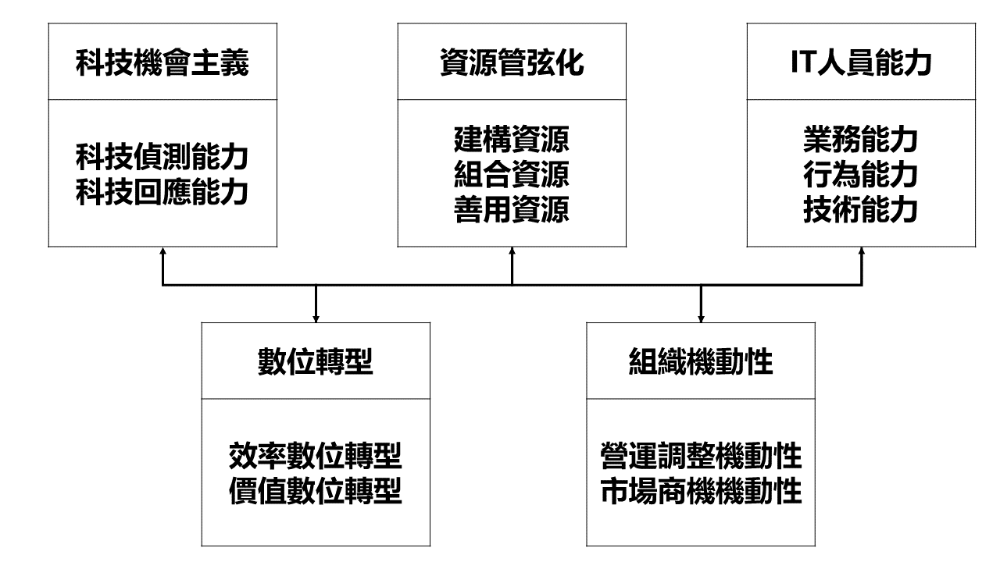

數位轉型影響因素研究問卷
國立雲林科技大學 資訊管理系碩士班
指導教授: 莊煥銘 博士 | 研究生: 劉哲瑋
步驟 1：基本資料
請依據您目前的個人與工作情況，在各題中選擇作答。
年齡
25~30歲
31~35歲
36~40歲
41~45歲
46歲及以上
教育程度
專科
大學
碩士
博士
數位轉型相關經驗年資
5年
6~10年
11~20年
21年及以上
是否為電子製造業
是
否
性別
男
女
下一步
步驟 2：研究架構說明

研究構面說明
構面
說明
A、科技機會主義
利用新技術帶來的機會來推動創新和增長。
B、資源管弦化
有效配置和整合資源以提升組織效率和能力。
C、IT人員能力
IT專業人員的技術和行為技能，用於支持和推動企業變革。
D、數位轉型
通過技術革新來重塑企業運營和商業模式，以提高競爭力。
E、組織機動性
企業快速適應市場變化和抓住機遇的能力。
上一步
下一步
步驟 3：因素重要性評估
評估進度
0 / 0
上一步
提交問卷